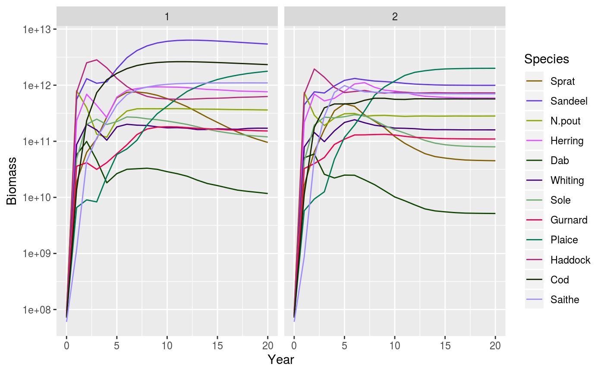

Takes two data frames with plotting data and displays them side-by-side, using the same axes and legend.
displayFrames(f1, f2, params, xlab = NA, ylab = NA, y_ticks = 6)
| f1 | Data frame for left plot |
|---|---|
| f2 | Data frame for right plot |
| params | A MizerParams object |
| xlab | Label for x-axis. Defaults to first variable name. |
| ylab | Label for y-axis. Defaults to third variable name. |
| y_ticks | The approximate number of ticks desired on the y axis |
ggplot2 object
The two data frames each need to have the same three variables. The first
variable will go on the x-axis, the third on the y-axis with a logarithmic
scale. The second variable should be the species and will be used to group
the data and display with the linetype and linecolour specified by the
linetype and linecolour slots of the params object.
The recommended way is to obtain the data frames using one of the supplied
functions, e.g., getBiomassFrame, getSSBFrame.
plotting_functions,
getBiomassFrame, getSSBFrame
Other frame functions: getBiomassFrame,
getSSBFrame
Other plotting functions: plot,MizerSim,missing-method,
plotBiomass, plotDiet,
plotFMort, plotFeedingLevel,
plotGrowthCurves,
plotPredMort, plotSpectra,
plotYieldGear, plotYield,
plotlyBiomass, plotlyFMort,
plotlyFeedingLevel,
plotlyGrowthCurves,
plotlyPredMort,
plotlySpectra,
plotlyYieldGear, plotlyYield,
plotting_functions
# Set up example MizerParams and MizerSim objects data(NS_species_params_gears) data(inter) params <- suppressMessages(set_multispecies_model(NS_species_params_gears, inter)) sim0 <- project(params, effort=0, t_max=20, progress_bar = FALSE) sim1 <- project(params, effort=1, t_max=20, progress_bar = FALSE) # Display biomass from each simulation next to each other displayFrames(getBiomassFrame(sim0), getBiomassFrame(sim1), params)